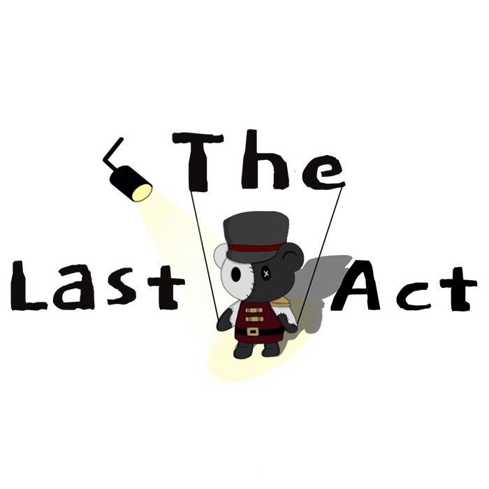

Quest A · Problem
Enemies ignore the shadow
The player controls two characters at once, the doll and its shadow. Enemies needed a clear rule for which one they could hurt.
Game · Case study
A 2D puzzle-platformer set in a haunted theatre. You play a small doll and its shadow, switching between them and moving stage lights to reshape the level and escape.

I was the team's Product Manager and its Gameplay/AI Champion, so I split my time between running the project and building how the game plays.
Each of these started with a problem we hit during development.
Quest A · Problem
The player controls two characters at once, the doll and its shadow. Enemies needed a clear rule for which one they could hurt.
Quest B · Problem
The team found that players could spam the split and shadow-switch abilities.
Quest C · Problem
Sound was hard-coded, so only a programmer could change it. The milestone rubric also required it to be data-driven.
The milestone rubric also required it to be data-driven.
I organised and ran playtests to gather player feedback, and managed the submission branch through last-minute bug fixing to the final build.
Quest A · Choice
The shadow isn't a physical thing that can be hurt, so I made enemies chase and damage only the physical doll.
Quest B · Choice
I added cooldowns to both, with an on-screen cooldown message so players know when they can switch again.
Quest C · Choice
I moved all game audio into data, with per-level audio settings in the level editor.
Quest A · Shipped
Patrol, chase and stun states for 2 enemy types: a rat that patrols and circles its platform, and a flying enemy with randomised movement.
Quest B · Shipped
Both cooldowns are in the final build.
Quest C · Shipped
Per-level audio tuning without code changes, plus a low-pass filter in shadow mode, spatial sound and randomised enemy sound effects.
Running playtests while also writing gameplay code taught me to separate "is this broken?" from "is this fun?". It also showed me that small rules, like whether an enemy can hit the shadow, need to be decided and written down early, because the whole team builds on them.